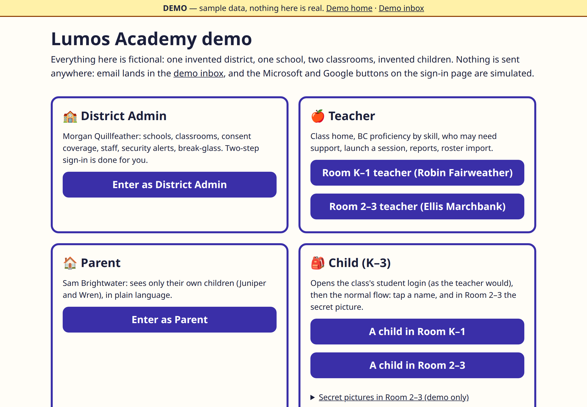
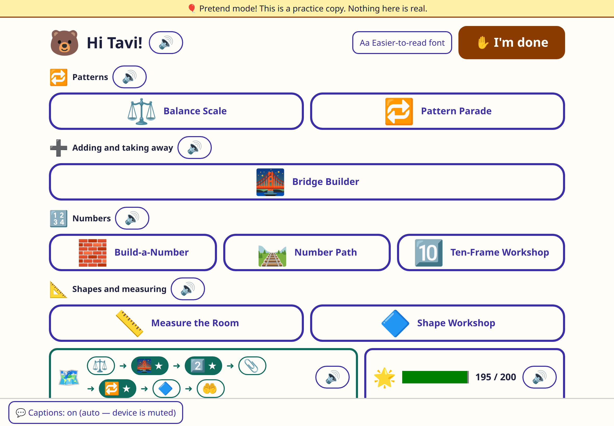
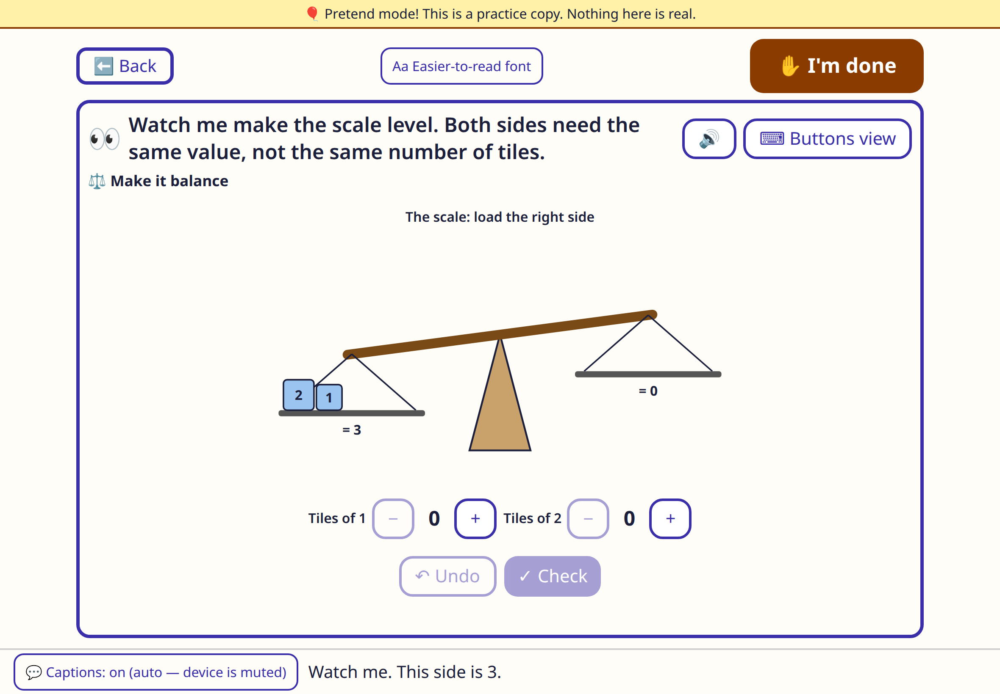
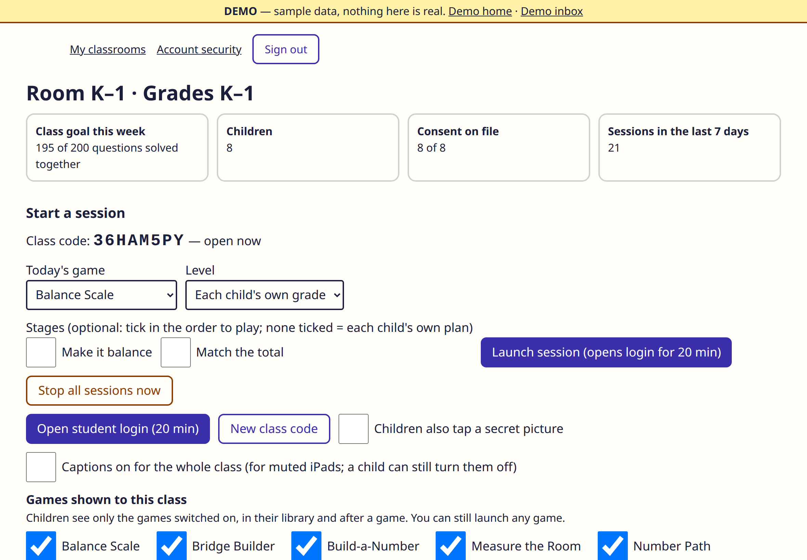
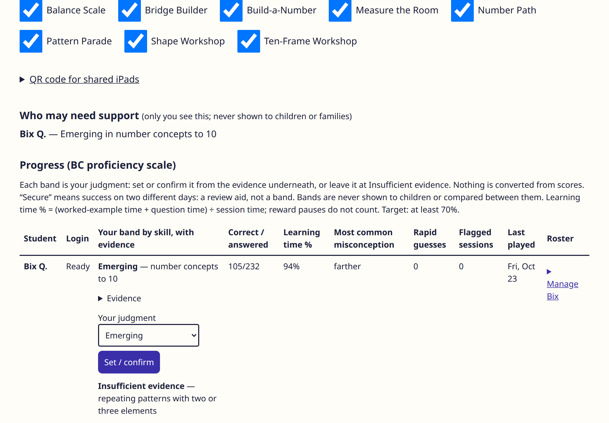
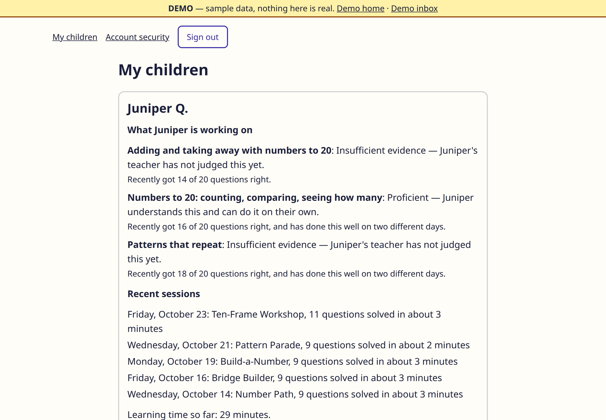

Demo showcase — screenshots of the working app, with fictional data. Nothing here collects information.
🌟 Lumos Academy
Math games that teach, built for BC elementary classrooms (K–3 first). Ten games, one calm library for kids, real evidence for teachers, plain language for parents.
This page is a tour, not the app itself: Lumos is a server application (logins, a database, saved progress), so it can't live on a static page. A hosted demo arrives with the pilot. Everything pictured below is the real, working build — with invented children, because that's how demos should work.
The ten games
🔟 Ten-Frame WorkshopK–3
Seeing how many without counting, one by one — the foundation of number sense.
🛤️ Number PathK–3
Counting on and back along a path; estimation for the older grades.
🌉 Bridge BuilderK–3
Making ten to cross the bridge — the strategy is named out loud, every time.
🧱 Build-a-NumberK–3
Tens and ones, built by hand — including the "wrong-looking" builds that are actually right.
🔁 Pattern ParadeK–3
Find the core of a repeating pattern, then build your own.
⚖️ Balance ScaleK–3
Equality you can see tip. Same value — not the same number of tiles. Grade 3: unknowns.
🔷 Shape WorkshopK–3
Sort, build, slide, flip, turn — and watch a net fold into a solid.
🦘 Open Line JumpsGr 2–3
Your jumps are your strategy on an open number line, to 100 and 1,000.
🗺️ Hundred Chart TrekGr 2–3
Clue-by-clue treks across the hundred chart: one row down is +10, and here's why.
📏 Measure the RoomK–3
Units end to end, no gaps — then real centimetres and a broken ruler.
A look inside

Four doors in. A district admin, teachers, a parent, and a child each get their own view — the demo opens any of them with one tap.

The child's library. Big buttons, read-aloud everywhere, no scores, no rankings, nothing to buy. The map at the bottom is the child's own journey — and "I'm done" wipes the shared iPad clean for the next child.

Teaching before testing. Every game opens with a short "watch me" demonstration. Balance Scale's first lesson is the big idea itself: same value, not the same number of tiles. A keyboard "Buttons view" plays every game identically — no dragging required, ever.

The teacher's classroom. Launch a session in two taps, pick today's game, and choose which games this class can see — each classroom is different, so the library is too.

Evidence, not auto-scores. Proficiency bands are the teacher's judgment, set from the evidence underneath — strategies used, help needed, the misconception that keeps showing up. "Insufficient evidence" is an honest answer the app is happy to give.

Parents see plain language. Their own children only: what's being worked on, what the teacher has judged, and what was played — no jargon, no surprises.
Built the way BC schools need it
BC curriculum only — Big Ideas and the BC proficiency scale (Emerging · Developing · Proficient · Extending).
Nothing to sell a child — no ads, no trackers, no leaderboards, no in-app purchases. Ever.
Kid-safe sign-in — class code, tap your name, pick your secret picture. No passwords or emails for children.
Every device — school iPads, a desktop browser, or a phone at home. Families aren't assumed to have any one of them.
Accessible by default — read-aloud, captions, keyboard play, easier-to-read font. WCAG 2.2 AA is the bar.
Privacy first — Canadian hosting at launch, the least data possible, and a privacy impact assessment pack for districts.